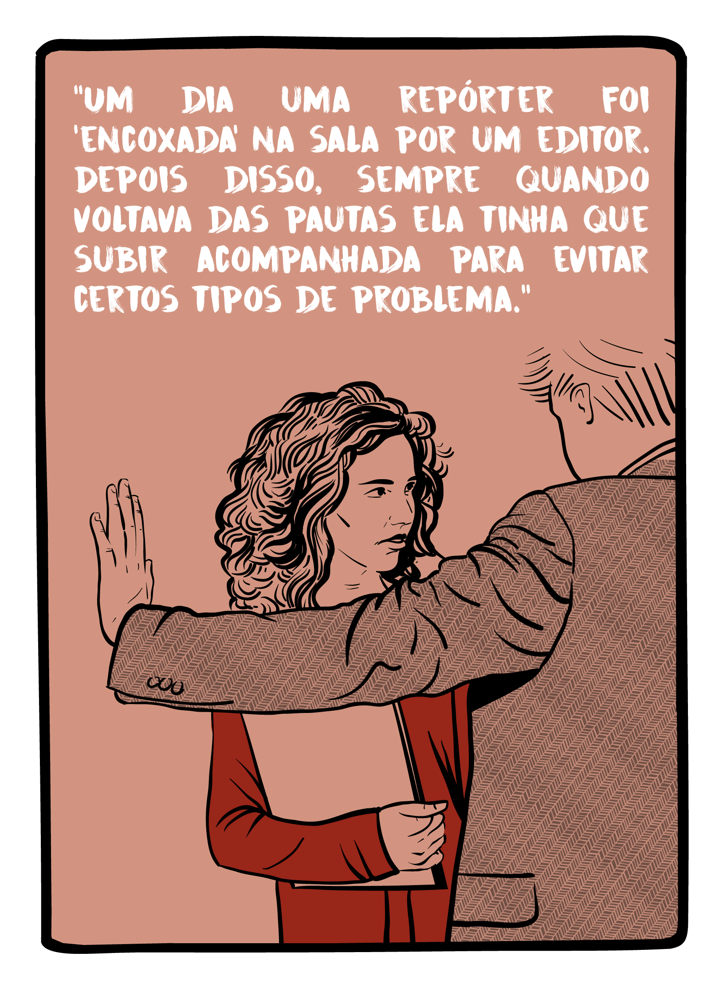
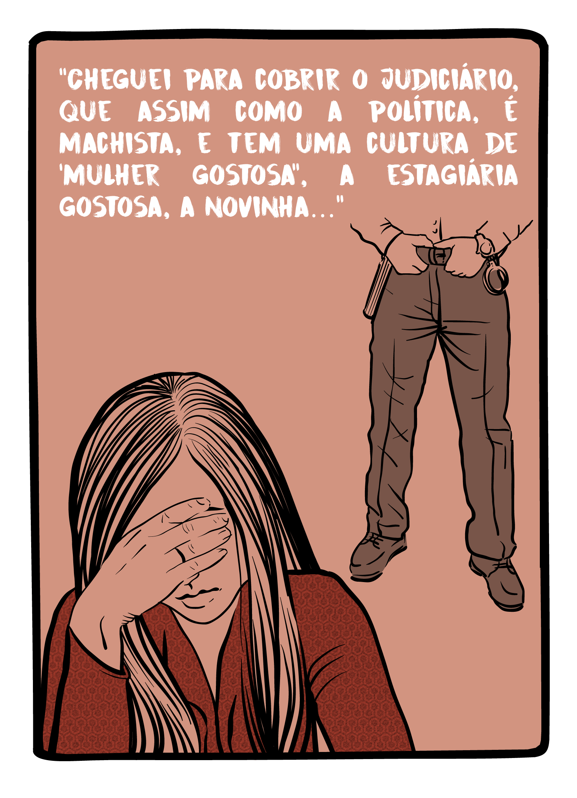
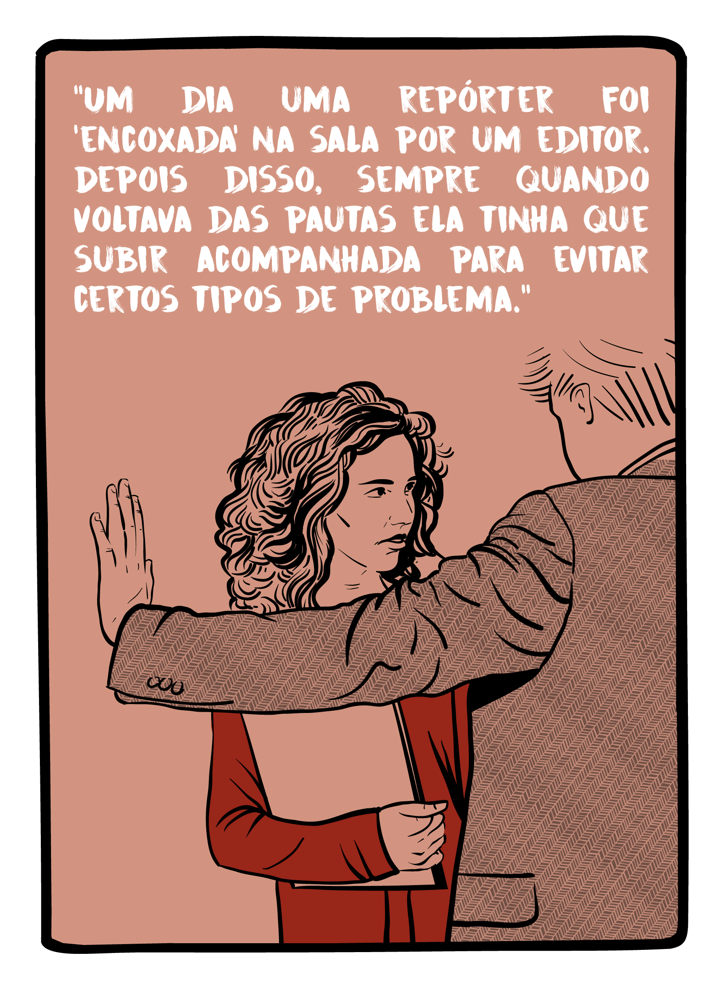
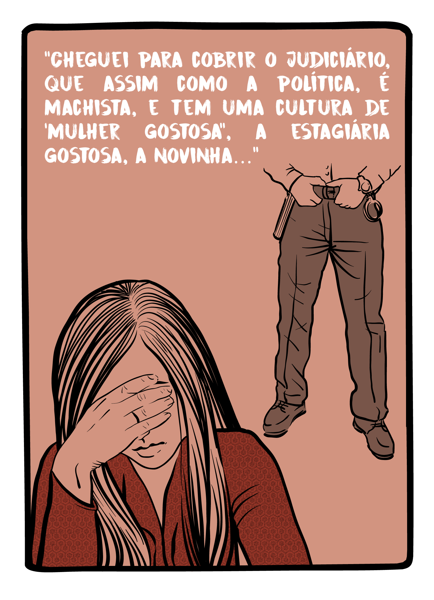

A Associação Brasileira de Jornalismo Investigativo (Abraji) e a Gênero e Número realizaram uma pesquisa inédita no Brasil, com o apoio do Google News Lab, para investigar os desafios enfrentados pelas mulheres no exercício da profissão jornalística.
Identificar a situação das jornalistas nas redações, os tipos de assédio e violência que enfrentam em suas rotinas de trabalho e como respondem a eles, suas posições hierárquicas e o modo como enxergam a perspectiva de gênero nas coberturas é essencial para compreender o papel da mídia - interna e externamente - nas assimetrias de gênero.
A pesquisa “Gênero no Jornalismo Brasileiro” aplicou métodos qualitativos e quantitativos, observando como se dão as relações de gênero dentro do ambiente das redações.
Na fase qualitativa, foram realizados grupos focais em Brasília, Porto Alegre, Rio de Janeiro e São Paulo com 42 jornalistas. Ao longo das conversas, as participantes falaram sobre cinco eixos temáticos dentro da questão de gênero e trabalho:
1. Satisfação pessoal no trabalho.
2. Percepção de atitudes sexistas e formas de assédio no trabalho.
3. Avaliação sobre chances e oportunidades.
4. Percepção do impacto de gênero no desempenho profissional.
5. Avaliação sobre gênero e a cobertura midiática. A partir do resultado
Com os pontos levantados pelas respondentes, o questionamento que ficou foi: o resultado adquirido nos grupos se aplica a um conjunto maior? A partir disso, a pesquisa quantitativa foi de grande importância, pois permitiu que os resultados obtidos nos grupos focais pudessem se tornar algo mais amplo. Foi desenvolvido, a partir dos grupos, um questionário online mais abrangente que pudesse alcançar o maior número de mulheres possível. O questionário ficou no ar de 26 de junho a 28 de agosto de 2017 e obtivemos respostas válidas de 477 mulheres que atuam em 271 veículos diferentes.
Baixe o PDF do estudo
Os resultados da pesquisa mostram que há um longo caminho a percorrer para que a igualdade de gênero se estabeleça no jornalismo profissional. Algumas recomendações simples podem acelerar a transição para um período de justiça com todas as repórteres, editoras e trabalhadoras da imprensa brasileira:
Os veículos devem produzir cartilhas para funcionários e colaboradores definindo o assédio cometido por uma fonte e indicando os procedimentos a serem adotados pelas repórteres quando forem vítimas desses atos.
Todos os repórteres devem ser orientados a tratar do tema do assédio junto a suas fontes; é especialmente importante ressaltar o caráter de violação à liberdade de expressão que essa conduta acarreta.
As redações devem criar um canal de comunicação interno para que vítimas de abuso e assédio possam fazer a denúncia formal.
Os veículos devem investir em capacitação de todos os repórteres em temas de diversidade; há cursos, palestras, debates e webinars disponíveis que podem auxiliar no combate a este tipo de violência.
As redações devem organizar grupos de monitoramento da diversidade de gênero nas redações; esse grupo deve ter um canal de comunicação direto com a direção do veículo e a missão de produzir relatórios periódicos com análise tanto da cobertura, para identificar desequilíbrios no gênero das fontes ouvidas, quanto da composição da redação, para orientar possíveis novas contratações.
As redações devem encarar como pautas relevantes todas as investidas inapropriadas de fontes sobre jornalistas mulheres. Estampar o assédio às trabalhadoras, bem como dedicar espaço a reportagens sobre diversidade de gênero é um passo importante para desestimular o abuso.
Coordenação de pesquisa:
Natália e Verônica Toste
Consultoria executiva:
Maiá Menezes, Alana Lobo e Thiago Herdy
Pesquisadora principal:
Verônica Toste
Pesquisadoras assistentes:
Andressa Cabral e Fernanda Távora
Gerência do projeto:
Guilherme Alpendre
Webdesign, infografias e animações
Mariana Santos, Inês Barracha, Rui Freitas, João Erbetta & Victor Abarca
Tem alguma sugestão para aprimorar a pesquisa em próximas edições ou quer nos ajudar a divulgar os resultados e ampliar o debate? Conta pra gente:
 


